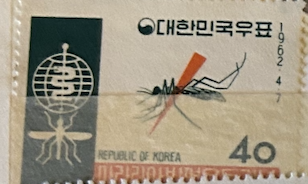
| SOURCE | TITLE| IMAGE MATCH | click to source page |
| eBay | Korea South 350,350a,MNH.Michel 344,Bl.172. WHO drive to eradicate Malaria,1962. | eBay | 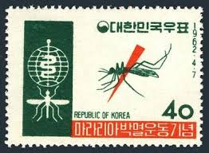 |
| eBay | Korean Insects Stamps for sale | eBay | 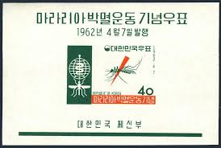 |
| eBay | KOREA LOT OF FIVE SOUVENIR SHEETS MINT NEVER HINGED--SCOTT VALUE $24.50 | eBay | 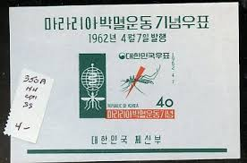 |
| eBay UK | Korea Stamps #350-350a MNH Souvenir Sheet & Stamp 1962 | eBay UK | 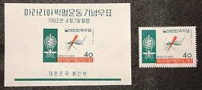 |
| HipStamp | Korea Stamp-1962 Sc#350A Mosquito-Malaria Eradication Imperf: Mnh: S/S-Vf | Asia - South Korea, General Issue Stamp / HipStamp | 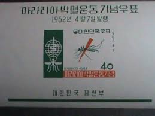 |
| eBay | Korean Red Cross Postal Stamps for sale | eBay | 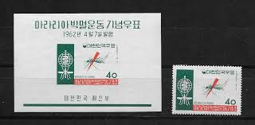 |
| eBay | Korean Medical Stamps for sale | eBay | 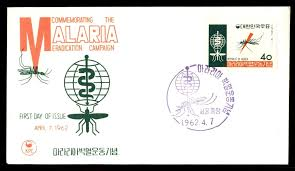 |
| Free stamp catalogue | Stamps with the theme Health - Freestampcatalogue.com - The free online stampcatalogue with over 500.000 stamps listed. | 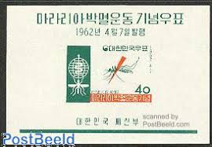 |
| Carousell | South Korea stamp 1962 Fight against Malaria mnh, Hobbies & Toys, Memorabilia & Collectibles, Stamps & Prints on Carousell | 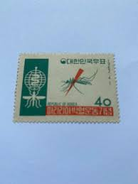 |
| eBay | ORIG 1962 KOREA SCOTT #350a - MOSQUITO-MALARIA ERADICATION - IMPERF STAMP SHEET | eBay | 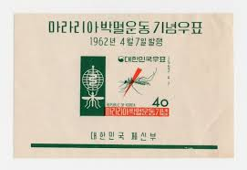 |
| eBay | Korean Topical Postal Stamps for sale | eBay | 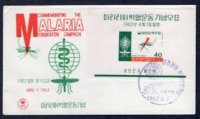 |
| eBay | 1962 🔥KOREA🔥Commemorative SHEET Eradication of malaria /Mosquito🔥MNHOG | eBay | 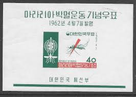 |
| eBay | R0089 Korea 1962 W.H.O. MNH | eBay | 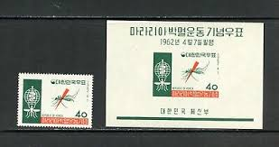 |
| eBay | SOUTH KOREA 1962 Miniature sheet Battle Against Malaria MNH | eBay | 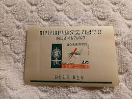 |
| 번개장터 | 박멸 | 브랜드 중고거래 플랫폼, 번개장터 | 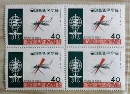 |
| eBay | 1962 Republic of Korea- World Health Organization Wages | eBay | 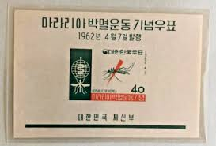 |
| eBay | South Korea 350a MNH 1962 Anti-Malaria Campaign S/S | eBay | 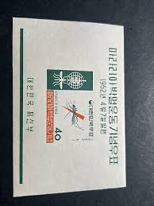 |
| Avion Thematics | Bernera 1981 Stained Glass Church Windows Perf Set Of 4 Values (10p To 75p) Unmounted Mint, stamps on churches stained glass | 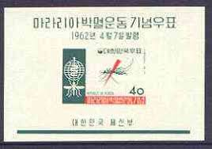 |
| eBay | South Korea 5 Won Korean War time occupation issue, 1950, First Known, MNH OG | eBay | 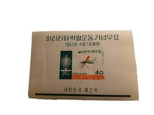 |
| eBay | Korea Scott #350a never hinged | eBay | 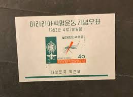 |
| Todocolección | corea del sur 1979 ivert 1013/4 1027/8 1032/3 y - Buy Antique stamps of Korea on todocoleccion | 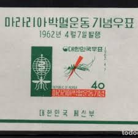 |
| eBay | South Korea - Scott 350, 350a (Malaria) MNH | eBay | 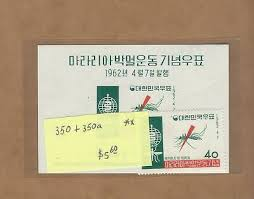 |
| 수집뱅크코리아 | 수집뱅크코리아 - 화폐/우표 성실한 감정 정확한 평가 | 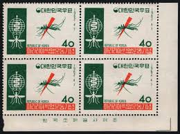 |
| eBay | Medicine,WHO,Eradicate Malaria Mosquito,Insect,Korea 1962 Stamp | eBay | 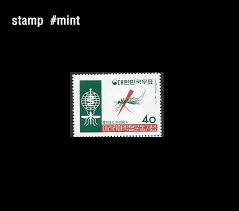 |
| NAVER | 사용필) 마라리아 박멸운동 기념우표 : 네이버 블로그 | 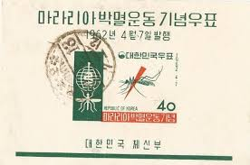 |
| Filatelia Longobardi | Filatelia Longobardi | 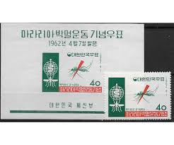 |
| lbdphilately.com | Products | 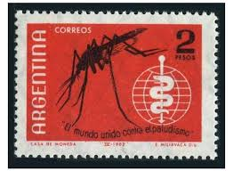 |
| NAVER | 1962년 발행 기념우표 및 보통우표 : 네이버 블로그 | 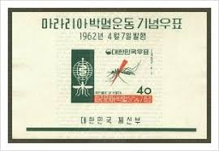 |
| InsectaBio is excited to announce FOUR travel awards for students planning to present a talk or poster at the Entomological Society of America 2024 meeting in Phoneix, AZ! Application due Aug 1… | | 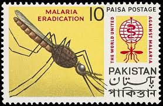 | |
| تمبرستان | سونیرشیت بیدندانه تمبر ریشه کنی مالاریا - کره جنوبی 1962 | 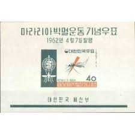 |
| CollectorBazar | pakistan EARLY MEDICINE MALARIA ERADICATION MOSQUITO MULTICOLOR 13 PAISA UNUSED NO GUM | 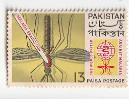 |
| iStock | Mosquito And Malaria Control On A Polish Postage Stamp Stock Photo - Download Image Now - iStock | 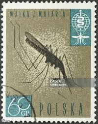 |
| iStock | Foto de Mosquito E A Malária Controle Em Um Selo De Esmalte e mais fotos de stock de Beleza - iStock | 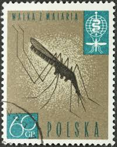 |
| Stamp Community Forum | Hiv, Vih, Aids, Sida, And Pwas - Page 7 - Stamp Community Forum | 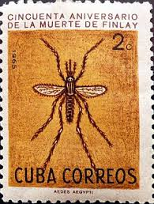 |
| Colnect | Stamp: Anopheles Mosquito (Anopheles sp.) (Iran(Fight against Malaria) Mi:IR 1077,Sn:IR 1156,Yt:IR 953,Sg:IR 1212,Far:IR 1098 📮 | 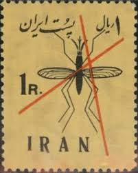 |
| Archives of Iranian Medicine | Final 3.indd | 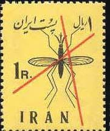 |
| Free stamp catalogue | Stamps with the theme Insects - Freestampcatalogue.com - The free online stampcatalogue with over 500.000 stamps listed. | 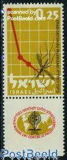 |
| World Mosquito Day More than just annoying summertime pests, mosquitoes are also responsible for spreading malaria, a disease that kills over half a million people every year. When Ronald Ross discovered that | 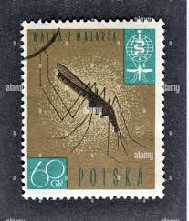 | |
| Malaria Stamps | Malaria on Stamps Collection - SierraLeone | 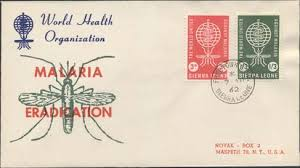 |
| eBay | Israel Fauna Insects Malaria Mosquito stamp 1963 | eBay | 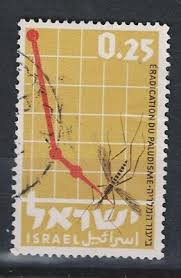 |
| eBay | s30085) ISRAEL MNH** 1962 Anti Malaria campaign 1v | eBay | 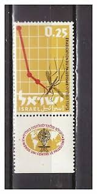 |
| Todocolección | o) 2005 argentina, argentine design, clothes an - Buy Antique stamps of Argentina on todocoleccion | 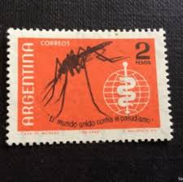 |
| eBay | US FDC # 3351k,l 33c Insects, Butterfly & Beetle pcs pddcssed 1999, 9p6966 | eBay | 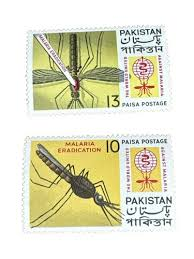 |
| This Thread Really BUGS me! Share your INSECTS on stamps. - Page 4 - STAMPBOARDS - Postage Stamp Chat Board and Stamp Forum | 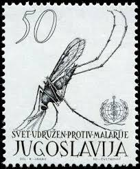 | |
| eBay | Poland Fauna Insects Malaria Mosquito stamp 1962 MNH B-6 | eBay | 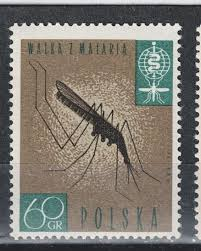 |
| Alamy | Malaria eradication hi-res stock photography and images - Alamy | 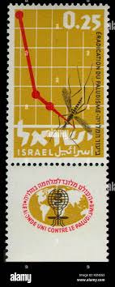 |
| eBay | Israel 218-tab two stamps, MNH. Mi 253 zf. WHO drive to eradicate Malaria, 1962. | eBay | 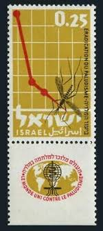 |
| eBay | Mozambique Stamps for sale | eBay | 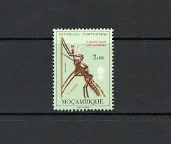 |
| Fandom | Dubai 1963 Malaria Eradication - Regular Stamps | JPP-Stamps Wiki | Fandom | 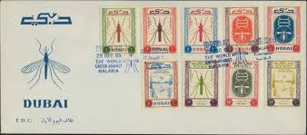 |
| X | culex is the mosquito of cooler regions, e.g. #CulexPipiens. They do not transmit malaria, but can pass on a variety of other parasites including those causing #filariasis, a filarial infection caused by | |
| Todocolección | argentina 1957, congreso internacional de turis - Buy Antique stamps of Argentina on todocoleccion | |
| eBay | DUBAI The World United Against Malaria MNH souvenir sheets | eBay | |
| Malaria Stamps | Malaria on Stamps Collection | |
| Malaria Stamps | Malaria on Stamps Collection - Vatican | |
| eBay | United Nations: Scott 102- MNH- 4c The World Against Malaria, Mosquito- 1962 | eBay | |
| iStampGallery | Sickle Cell Eradication - iStampGallery | |
| Alamy | POLAND - CIRCA 1978: a stamp printed in Poland shows Anopheles mosquito and blood cells, 4th International Parasitological Congress, circa 1978 Stock Photo - Alamy | |
| eBay | 1919 AMERICAN EXPEDITION FORCES COVER ONE OF THE FIRST DIV. TO ARRIVE IN EUROPE | eBay | |
| eBay | Lightly Hinged Mozambican Stamps for sale | eBay |